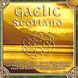

Celtic Lyrics Corner > Compilations > Gaelic Scotland > Ri Fuaim An Taibh
|  | Ri Fuaim An Taibh |
| Credits : | Mary MacLeod; arranged by Donnie Murdo MacLeod |
| Appears On : | Gaelic Scotland (compilation) |
| Language : | Gàidhlig (Scottish Gaelic) |
| Lyrics : | English Translation : |
| Ri fuaim an taibh | At the ocean's sound |
| 'S uaigneach mo ghean | My mood is forlorn |
| Bha mis' uair nach b'e sin m'àbhaist | Time was that such was not my wont to hear |
| Bha mis' uair nach b'e sin m'àbhaist | Time was that such was not my wont to hear |
| Ach pìob nuallanach mhòr | But the great shrill-voiced pipe |
| Bheireadh buaidh air gach ceòl | All music surpassing |
| Nuair a ghluaist' i le meòir Phàdraig | When Patrick's fingers stirred it |
| Nuair a ghluaist' i le meòir Phàdraig | When Patrick's fingers stirred it |
| Gur mairg a bheir gèill | Woe to him who |
| Don t-saoghal gu lèir | Gives his trust to the world |
| 'S tric a chaochail e cheum gàbhaidh | Oft has it changed in a perilous way |
| 'S tric a chaochail e cheum gàbhaidh | Oft has it changed in a perilous way |
| Beir an t-soraidh seo bhuam | Bear this greeting from me |
| Gu talla nan cuach | To the hall of wine-cups |
| Far 'm bi tathaich nan truagh dàimheil | Haunt of kinsmen in distress |
| Far 'm bi tathaich nan truagh dàimheil | Haunt of kinsmen in distress |
| Chun an taighe nach gann | To the dwelling that is not scanty |
| Fon leathad ud thall | Over yonder beneath the slope |
| Far bheil aighear is ceann mo mhànrain | Where is the joy and the theme of my melody |
| Far bheil aighear is ceann mo mhànrain | Where is the joy and the theme of my melody |
| Tormod mo rùin | Sir Norman of my love |
| Olghaireach thu | One of Olgar's race |
| Foirmeil o thùs d'àbhaist | Stately from of old your custom |
| Foirmeil o thùs d'àbhaist | Stately from of old your custom |
| Chan eil cleachdadh bheil brìgh | There is no virtue that is worthwhile |
| Gaisge neo gnìomh | There is no valor of prowess |
| Nach eil aigne mo ghaoil làn dheth | But my dear one's person is full thereof |
| Nach eil aigne mo ghaoil làn dheth | But my dear one's person is full thereof |
| An treise 's an lùth | In might and in vigor |
| An ceudfaidh 's an cliù | In understanding and renown |
| Am feile 's an gnùis nàire | In liberality and modesty of mien |
| Am feile 's an gnùis nàire | In liberality and modesty of mien |
| Fhuair thu fortan o Dhia | From God you received a dower |
| Bean bu shocraiche ciall | A wife most steadfast of sense |
| 'S i gu foistinneach fial nàrach | Sedate, shamefast and hospitable |
| 'S i gu foistinneach fial nàrach | Sedate, shamefast and hospitable |
| I gun dolaidh fon ghrèin | Without defect under the sun |
| Gu toileachadh treud | For the pleasuring of companies |
| 'S a folachd a rèir bànrigh | And her lineage is equal to that of a queen |
| 'S a folachd a rèir bànrigh | And her lineage is equal to that of a queen |
| 'S tric a riaraich i cuilm | Often has she dispensed a banquet |
| Gun trioblaid gun tuilg | Without confusion or pomp |
| Nighean iarla Dhùn Tuilm, slàn leat | Daughter of Duntulm's heir, good health to you |
| Nighean iarla Dhùn Tuilm, slàn leat | Daughter of Duntulm's heir, good health to you |